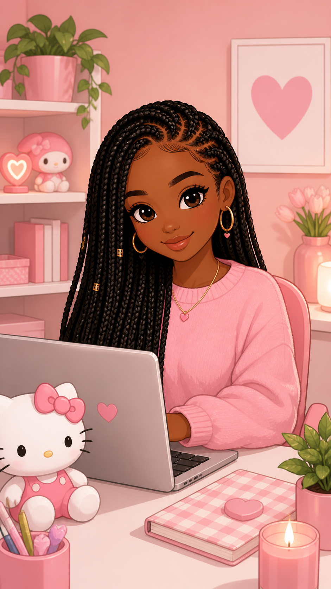
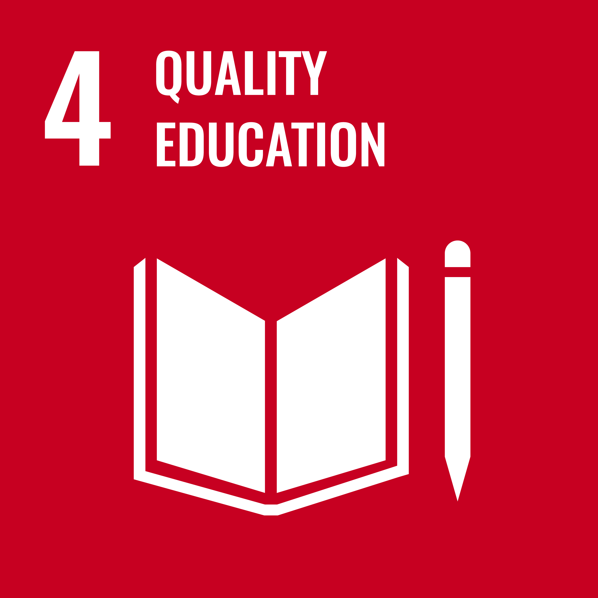

Hi! I'm Esther Arinze.

I am a Port Harcourt based learner currently taking courses to improve my digital skills.
I am hardworking, creative and I love learning new things. Also, I am passionate about things related to education.

SDG 4: Quality Education
I chose Quality Education because I believe everyone deserves access to learning. I am passionate about using digital skills to help students learn better and bridge education gaps in my community.
Being a libra, I am a charismatic, intelligent, optimistic and social person.
Built a responsive business website based on education during this program.
Built a portfolio page containing information about me.
Started crocheting during holiday and made 5 different bags. I sold 3 to family members and used the money to buy data for my online courses. It taught me patience and business skills.